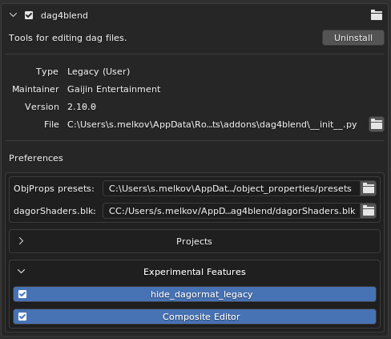
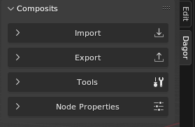
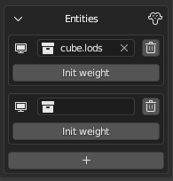
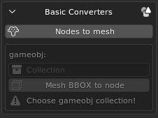
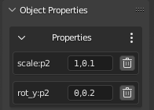
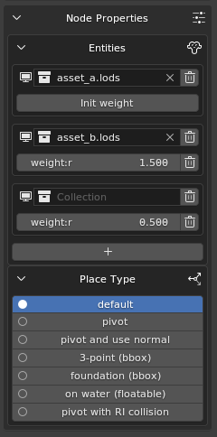

dag4blend Composite Editor
How to Enable
The Composite Editor is currently under development and is considered an experimental feature. As such, it is hidden by default. To enable its visibility, you need to check the Composite Editor box in the add-on settings.
The Composite Editor can be found in the N-panel under the Dagor tab. The panel is divided into four main sections: Import, Export, Tools and Node Properties:
CMP Import

import path: this is the full path to the
name.composit.blkfile. However, if the correct project is selected, you can simply specifyname.composit.blkor even justname, the add-on will locate and import it.refresh cache: to import subcomposites and geometry, the add-on needs to know where to find them. When this option is checked, the importer will scan all files in the active project directory once and record where everything is located. This list is then used during the import process, which significantly speeds up the operation compared to the previous version, where the directory might be searched multiple times across several levels of nesting.
If you’re importing composites from the same project, you can uncheck this box to save a few seconds, but only if you’re certain the paths are up-to-date. A separate cache is maintained for each project.
recursive: this option imports not only the specified composite but also its subcomposites, which are nodes, and their subcomposites. The algorithm should be self-explanatory.
with dags: imports
.lod00.dagrendinsts and.dagprefabs for all composites.If recursive is disabled, the import will only place the models found in the
.blendfile, and for all others, it will create empty collections.It makes sense to disable this option if you only need to slightly adjust the position of a specific node, or if you know that the required rendinsts are already present in the file.
with lods: available only when the with dags option is enabled. Allows importing not only
lod00, but all other LODs (level of detail) as well.Keep in mind that this will significantly slow down the import process and make the scene heavier. It’s only reasonable to enable it when you need to modify the mesh (not node positions) in a small composite. For example, if you need to move a couple of apples so they don’t stick through the side of a box in a composite, and the pile of apples is a single mesh, you still need to update all LODs, not just the base one.
If a collection named after the composite already exists, it will be cleared and reused for import. If it doesn’t exist, a new collection will be created.
The importer respects the hierarchy of the .blend scene. Rendinsts and prefabs
are imported into the GEOMETRY scene, while composites are imported into
COMPOSITS.
If a .dag collection (rendinst or prefab) already existed before importing the
composite, that asset will not be re-imported.
The node type and name are explicitly written to the Collection Properties.
For rendinsts, this is not critical (since the name is stored in the *.lods
file, not in nested geometry collections), but for prefabs, this is important,
the Override Name option will use the overridden collection name.
Note
Don’t forget to check the log.
Blend File Structure
The Composite Editor also introduces a new file structure for .blend files.
Instead of having everything in a single scene, the new approach suggests using
multiple scenes, each organized by content type.

Scenes in Blender can be thought of as “.blend files within a .blend
file”. They are independent of each other, meaning that settings like checkbox
states, export paths, and other parameters are unique to each scene.
COMPOSITS. This scene is where all composites are imported.
GAMEOBJ. Collections for game objects are created here. These objects are not automatically readable, so placeholders for previews (and some tools, discussed later) must be manually added.
GEOMETRY. This is where all
.dagfiles are imported, including through dag-imports if the scene exists.Scene. The default scene that exists in a new
.blendfile. Any scenes you create will also appear in this list; tools do not delete user-created resources.TECH_STUFF. Ideally, you should never need to use this scene. It contains temporary collections of random nodes, and in the future, other resources required for the add-on’s internal tasks.
These scenes are not linked to each other. To transfer resources between them, the add-on adds a collection called TRANSFER_COLLECTION to each scene. This collection isn’t a copy but the same entity across all scenes. For example, you can enter the GEOMETRY scene, create nodes from the necessary rendinsts, place them in this collection, and then switch to the COMPOSITS scene to start assembling your composite using those nodes.
If you want to set up this scene structure without importing a composite, or if you’ve accidentally deleted the TRANSFER_COLLECTION, don’t worry. The CMP Tools > Scenes section includes a button for creating or updating the scene structure, along with a duplicate scene switcher. This dropdown differs from the standard one in that it prevents accidental deletion or duplication of scenes.

Creating Nodes
Let’s start by exploring the different methods for creating nodes. There are several approaches:
Adding an Empty Object
You can add an Empty object to the scene, enable instancing in the Entities panel, and select the desired object’s collection from the dropdown menu. If instancing is disabled, or the collection is not specified, the node will be exported as empty.

Dragging a Collection
In the Outliner, you can drag the collection containing the desired asset into the 3D view.


In this case, there is no need to enable instancing.
Enabling Instancing via Object Properties
Add an Empty object and enable instancing through the Object Properties panel (Blender’s native properties, not the add-on’s).

The first method is effectively a more flexible version of the third. Why is it more flexible? This will be explained below.
Editing Nodes
To convert a standard node into a random node, simply click the “+” button in the Entities panel.
The second entity will initially be empty, and you can assign a collection to it either through the dropdown menu, by entering the collection name manually, or by dragging it from the Outliner into the field.
Important
There is no safeguard against incorrect selections, so all collections are available for selection. Ensure that the chosen collection is indeed a node.
To set a weight different from the default value of 1.0, click Init weight
and enter the desired value in the newly generated field.
By default, all entities are displayed immediately, which may hinder your workflow. To hide one or more entities in a random node, click the Monitor icon next to its name.
To delete an entity, click the Trash icon. Once only one entity remains, the node will revert to a non-random state.
Setting Node Types and Changing Display
In composites, it’s possible (and sometimes necessary) to specify the node type, whether the asset is a rendinst, game object, composite, or prefab. The importer determines the type automatically, but when creating new nodes, you’ll need to specify it manually.
In Blender’s editor, an asset is represented by a collection that is drawn over an Empty object. Therefore, the type needs to be set in the collection’s properties. When the Composite Editor is enabled, a new panel, Type, is added to the Collection Properties.
To specify the type, click the circle next to the appropriate type, and your selection will be highlighted. A newly created collection will show Undefined as the active value until a type is set.

During export, the collection’s name (without any suffix like .lodNN, .lods,
or .002) and its type, if specified, will be recorded. Nodes with instanced
collections such as:
assetasset.lodsasset.lod01asset.001
are treated equivalently by the exporter (assuming their types are the same). The “suffix trimming” allows you to toggle the display of all rendinst LODs at once (by default), switch to only the base LOD for cleaner and more accurate display, or focus on the LOD with collision to check for intersections between the parent and child colliders for proper destruction setup.
To hide a mesh from the composite preview, you can disable its original in the source collection for the viewport using the monitor icon, as you did with entities in the previous section. This is useful for disabling collision meshes, for example, when you want to view LODs with collisions but not the colliders themselves, or temporarily disabling decals if Z-fighting is visually distracting.
Any collection can be used:

Node Hierarchy in Composite
To establish a parent-child relationship among nodes and build a more complex hierarchy, use Blender’s standard tools.
You can set a parent for a node through the object’s properties. However, this will cause the matrix to recalculate, resulting in the object visually “jumping” as its new “zero” point changes.

To maintain the node’s visual position, use the Set Parent command, either by pressing Ctrl+P or through the Object > Parent menu.
To reverse this process and remove the parent while preserving the matrix, use the Alt+P shortcut or select the option in the same Object > Parent menu.
Using Blender’s Built-in Features
To display nodes as Empty objects, the Composite Editor uses Blender’s built-in feature: collection instancing. As a result, tools that work with collection instancing also work with composites.
Replacing Multiple Nodes Content
If you need to quickly replace the content of multiple nodes with the same asset:
Select all the nodes you want to replace.
Assign the desired collection to the active node (the order of this step and the first one can be swapped – both work the same).
Then, link the same collection to all the selected Empty objects. You can do this by pressing Ctrl+L and selecting Link Instance Collection (the default hotkey),

or by accessing the same option through the Object > Link/Transfer Data menu if your hotkeys have been customized.

Selecting Identical Nodes
Nodes that share the same instance collection can not only be merged, but also selected together:
Select the node containing the asset you want to locate in the scene.
Use Select > Select Linked > Instanced Collection to select all other nodes that reference the same collection.

In the default keymap, this menu can be accessed with Shift+L.
Snap to Surface
Remember that snapping also works here. For placing objects on an uneven surface, you might find the Face snapping mode with Project Individual Elements active to be useful. This ensures that all selected nodes will snap their pivot points to the surface. Optionally, you can also enable rotation to match the surface normal.
Important
Do not confuse this with the place_type:i setting for exported nodes, this
specific snapping needs to be set in the dagObject Properties of the Empty
object if required.
CMP Tools
Contains several main sections.
Scenes
A single button initializes the file structure with separate scenes for game objects, geometry, composites, etc.
Pressing the button again restores this structure. For example, to recreate a
deleted TRANSFER_COLLECTION or missing scenes.
Basic Converters
Operators that convert the selected object into another type. For example, an instance collection into a mesh, and vice versa.
Nodes to mesh: converts each selected node into a single mesh.
This operator does not analyze the node contents. If the node includes several LODs or collisions, all of their geometry will be merged into one mesh without any object properties. Custom normals are also not preserved.
The operator was primarily designed for exporting composites as
.dagfiles to 3ds Max, which currently cannot import composites directly.It can also be useful in combination with the following operator.
Mesh BBOX to node: converts the bounding boxes of all selected objects into instances of the selected collection. This is intended to simplify placement of objects such as
indoor_wall,envi_probe,wall_hole, and so on.The required collections must be created manually.
After that, you can hide the collection completely and leave it untouched. Simply add a few meshes for future game objects and transform them however you like, either in Object mode or Edit mode. The pivot position does not matter. The replacement will work correctly as long as the bounding box is correct before conversion (its display can be enabled in Object Properties).
An extreme example (such rotations are unlikely to be needed in practice):


It’s recommended to add a 1-meter cube with a
gi_blackmaterial to the collection of the future game object for clarity. This way, you can later temporarily convert it back into a mesh for adjustments.
Nodes to Asset
This section contains more advanced converters with similar functionality. They allow you to create a new rendinst or composite from the selected nodes.

Parent Node
Expects an Empty object. If not specified, the center of the new asset will be placed at the scene’s origin. If specified, the pivot of the new asset will be placed at the position of that Empty.
If a selected node is accidentally deleted from the scene, it will still remain
in the .blend file. The button on the right allows you to re-link a mistakenly
deleted Empty back into the scene.
Naming Mode
In Collection mode, you can choose the collection to which the new asset will be sent.
If none is specified but the parent node has an Instance Collection, the new asset will be placed there, replacing its previous contents.
If no collection is specified either directly or through the parent node, the asset will be named
new_assetand placed into a collection of the same name.In Name mode, a collection will be automatically created in the correct scene, and the user only needs to enter the desired asset name.
Operators
To sub-composite: creates a new collection containing a composite and moves the selected nodes into it. The new composite will be assigned as the entity of the Parent Node.
To rendinst node: breaks down the selected nodes to the rendinst level and organizes the LODs into subcollections so that the rendinsts can be easily exported in Collections Separated mode.
This operator does not take LOD distances into account; it simply checks how many LODs exist in the root objects. All
lod00objects are placed into a*.lod00collection, alllod01objects into*.lod01, and so on.The operator will not execute correctly if any of the selected nodes lack the standard hierarchy, i.e. a collection named
name.lodscontainingname.lod00, etc.
Edit Sub-Composites
These operators are designed to modify the hierarchy within composites.

Split Node
Breaks down a composite node into its components. For example, it can replace a
node like some_building_indoor_stuff_cmp with the individual props contained
within that composite.
If the recursive checkbox is enabled, not only the selected composite will be unpacked, but all its sub-composites as well, down to the individual rendinst nodes. Otherwise, only one level will be unpacked.
If the destructive checkbox is enabled, the extracted nodes will appear directly in the root of the collection, and the original node will be permanently deleted. If not enabled, the original node will remain in place but with instancing disabled, and the new nodes will be parented to it. In this case, the following operators can be used.
Revert
Works only on nodes previously unpacked using Split Node. It deletes all child nodes of the unpacked subcomposite and restores instancing, the composite will once again be drawn inside the node.
Rebuild
Also works only on previously unpacked nodes, but is intended to apply changes rather than revert them. The contents of the unpacked composite are replaced with the current child nodes of the processed instance.
Usage Examples
You’ve imported a building composite with all nested levels. Inside
indoor_stuff, a picture is positioned incorrectly, it floats in the air with a visible gap from the wall.In the building composite, select the
indoor_stuffnode and apply Split Node, ensuring both checkboxes are disabled. Now you can move theindoor_stuffnodes while seeing their correct position within the final asset. Move the picture flush against the wall, select the originalindoor_stuffnode, and click Rebuild. Done, theindoor_stuffcollection has been updated and can now be exported so the changes appear in Asset Viewer.If, after unpacking the composite, you accidentally deleted a table, you can use Revert instead of Rebuild to return the node to its original state and try again.
You’ve imported a building composite created in daEditorX, where all nodes are placed in the root.
You need to divide it into subcomposites. Select the decorative wall assets and, in Name mode, create a new subcomposite called
my_building_decorwith its origin at the scene center. Repeat the process forindoor_stuffand other groups.A level designer assembled wooden floors from many separate planks. It looks good, but destruction behaves poorly, and there are too many nodes per cell in the level.
Import the composite, select all planks, and create one rendinst instead of a composite made up of dozens of individual planks, assigning meaningful names to each rendinst. If needed, merge nodes within the rendinst and optimize collisions and LODs. The process isn;t fully automated, but it;s a solid starting point for cleanup and optimization.
CMP Export
The CMP Export section is straightforward: specify the directory path where the composite should be exported, along with the collection representing the composite to be exported.

Parameters
Export parameters, such as random offsets, are specified in the Object Properties of the Empty object. These parameters do not appear in the viewport. During import, only the initial state (the first part of the value) is applied, but any random deviation (the value after the comma) will not be.
If a node has at least one random field specified, its transformation matrix will not be saved. If the imported node has both a matrix and random fields, the random parameters will be ignored, and a corresponding notification will be logged.
Some of the parameters are also displayed in the Composite Editor, under the Node Properties panel:
This section shows the list of Entities, their weights, and the special parameter Place Type. Internally, this is a numerical value, it can still be viewed in the standard Object Properties list, but here it’s presented in a more user-friendly way, displaying mode names instead of numeric indices.
Limitations of the Composite Editor
Includes Not Supported
Currently, includes are not supported. Lines with the
includedirective are ignored during import, which may lead to some data loss. This will be noted in the log.Blender’s Limitation
Blender supports a maximum of 7 levels of nesting. Multi-level composites may experience performance issues and may not display correctly – starting from the 8th level of nesting, the content will not be rendered. However, import and export are still possible.
For example, a node-rendinst represents one level of nesting. A random node with several rendinsts represents two levels. A subcomposite with these random nodes would be three levels, and so on. This issue mainly arises when importing buildings with interiors, such as in daNetGame-based games, where
indoor_stuffincludes numerous nested composites with randomness – like random cabinets with objects placed on the shelves, each with random offsets.Axis Mismatch
In Blender, the Z-axis is up, while in Dagor, the Y-axis is up. While matrix adjustments are handled automatically, preventing scenes from tilting, it’s important to remember that
offset_y:p2refers to up/down movement despite the name. The same logic applies to rotation and scaling.Random Offset Parameters
Currently, random offset parameters do not automatically display in the viewport. During import, the add-on sets the initial offset, but if you add or modify a random parameter, you’ll need to manually adjust the node’s position.